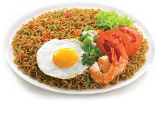

Pertama, Beli indomie rasa kesukaan mu di toko terdekat,
kamu bisa membelinya di supermarket, minimarket, pasar atau warung, dan pastikan kamu cek expire datenya
Kedua, masak air panas hingga mendidih, buka bungkus indomie dan msukan mie ke dalam air,
tunggu sekitar 5 menit, jika kamu ingin, kamu bisa meambahkan telur, sayuran, dan lainya ke dalam mie

Ketiga, angkat mie dari air lalu masukan ke dalam mangkok atau piring anda,
buka bumbunya dan aduk hingga bumbunya tercampur dengan sempurna, dan indomie anda siap untuk di makan